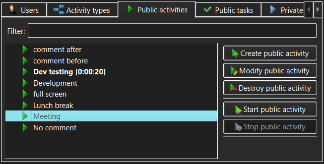

Public Activities view
The Public Activities view allows management of Public Activities (subject to access
permissions granted after login). These are Activities available to any user who
can login to a TimeTracker3 workspace.

The controls in the Public Activities view allow the user to specify:
- Public activities list - this displays the list of
available Public Activities. Normally all Public Activities will be visible
to all users; however, if the corresponding User is configured to only be
allowed to work on specific Public Activities, then such user will only be
able to see these configured Public Activities but not the other existing
Public Activities.
- Filter - type anything here to narrow the set of
displayed Public Activities or to quickly find a specific Public Activity. The
filter match can appear anywhere within the Public Activity name.
- Create public activity - use this button to create a new
Public Activity.
This will only be permitted to someone with Administrator or Manage Public
Activities
capability and will be disallowed in a read-only workspace.
- View/Modify public activity - use this button to view or modify
the Public Activity currently selected in the Public Activities list. The meaning of this
button (view or modify) will be determined by whether the current user has
logged in with Administrator or Manage Public Activities capability and whether or not
the workspace is read-only.
- Destroy public activity - use this button to permanently destroy
the Public Activity currently selected in the Public Activities list. You will be asked to
confirm the destruction, as this is a dangerous operation in that it also
affects all Work items and Events logged against that Public Activity. The destroy confirmation
dialog that pops up will show just how much the recorded work history will be
impacted.
- Start public activity - use this button to start
recording the currently selected Public Activity. If any Activity or Task
was already being recorded, its recording is automatically stopped and the
corresponding Work item is logged into the workspace.
- Stop public activity - use this button to stop
recording the Public Activity that is currently being recorded. This button
will only be available when such a Public Activity is selected in the Public
Activities list.
While a Public Activity is being recorded, the corresponding item in the
Public Activities list will be highlighted and its recorded duration will be
displayed alongside the item and updated live.
Note that only one activity can be recorded at any given time. Therefore, if
e.g. a Public Task or a Private Activity is being recorded, starting a Public
Activity will stop and log the previously active recording, logging the
corresponding Work item.
As well as action buttons, the Public Activities list allows invoking the same
actions (create, modify, destroy, start or stop Public Activities) via the context menus that pop
up when the Public Activities list items are right-clicked.
See also:
Create/Modify Public Activity dialog,
Destroy
Public Activity dialog